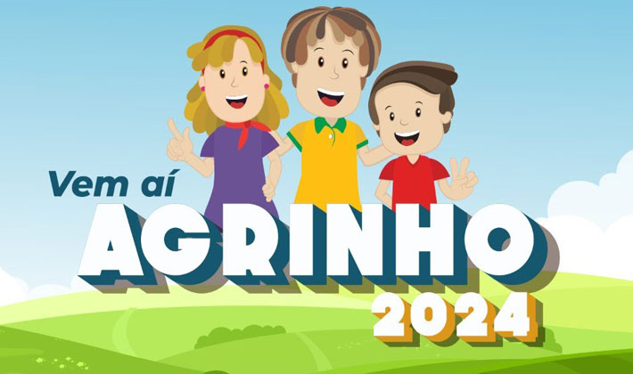

O que é o Concurso Agrinho?

Muito se fala sobre o papel da escola na formação do cidadão. Mais do que o ensino de competências técnicas, “a educação abrange os processos formativos que se desenvolvem na vida familiar, na convivência humana, no trabalho, nas instituições de ensino e pesquisa, nos movimentos sociais e organizações da sociedade civil e nas manifestações culturais”, de acordo com a definição da Lei de Diretrizes e Bases da Educação Nacional (LDB).
É neste contexto que o Agrinho, desenvolvido pelo Sistema FAEP/SENAR-PR há 24 anos, consolidou-se como o maior programa de responsabilidade social da instituição e modelo de educação e cidadania para a formação de novas gerações.
O Agrinho promove uma atuação para além da estrutura tradicionalmente conhecida da sala de aula, por meio de uma proposta pedagógica que tem como princípios fundamentais a colaboração, a interdisciplinaridade, a transversalidade e a pesquisa. Desta maneira, o programa incentiva o cumprimento da função social da escola, como formadora de pessoas conscientes, críticas e capazes de compreenderem o mundo em que estão inseridas.
Segundo a idealizadora do Agrinho, Patrícia Lupion Torres, um dos objetivos do programa é romper com a visão maniqueísta de educação baseada na diferença e parcialidade, que divide os conteúdos em estruturas disciplinares individuais. “O Agrinho propõe o debate sobre a complementaridade dos conceitos e relações, frequentemente colocados como antagônicos. Trabalha-se a interdependência, a compreensão do outro, a argumentação, a visão dialética e a superação das dicotomias existentes nas mais diversas temáticas”, explica.
Quais oportunidades O Agrinho proporciona?
Objetivo geral:
Incentivar a prática pedagógica através de projetos que contemplem a construção do conhecimento, proporcionando a inserção de temas de relevância social, cultural, econômica, política e ambiental, visando melhorias constantes de hábitos e atitudes.
Objetivos específicos:
Promover novas práticas pedagógicas;
Despertar iniciativas empreendedoras;
Contribuir para a formação integral do cidadão;
Contribuir na formação de alunos e professores pesquisadores, com os sujeitos realizadores da história atual;
Promover maior integração entre escolas, professor, aluno e comunidade;
Difundir aspectos relativos ao agronegócio na comunidade escolar, primando pela sustentabilidade e qualidade de vida.